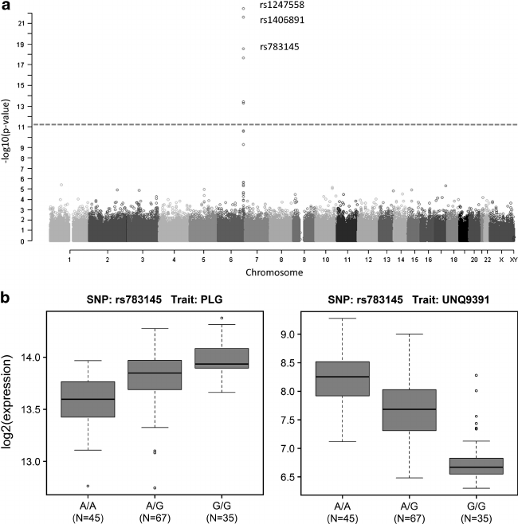
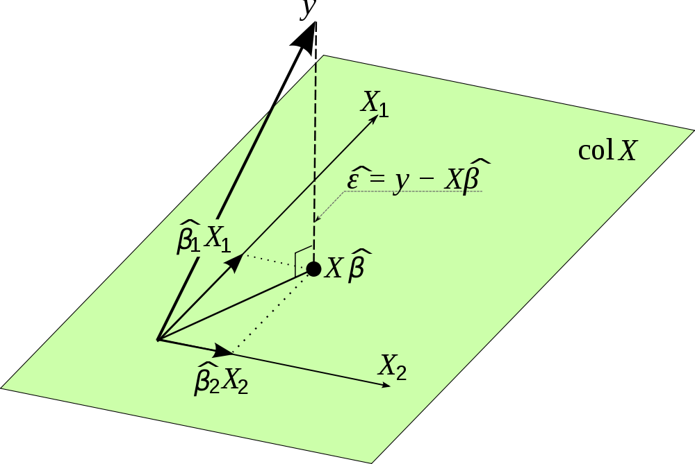

### GWAS & EQTL



---
### Simple Linear Model

$y_{i} = \beta_{0} + \beta_{1} x_{i} + e_{i}$, $i=1,\dots,n$

where $e_{i}$ are independent random variables with $E(e_{i}) = 0$ and $Var(e_{i}) = \sigma^2$.  

The $x_{i}$ are assumed to be fixed.  This is referred to as the standard statistical model: value of $y$ is a linear function of $x$ plus random noise.

$y$ is called the **dependent** or response variable and $x$ is called the **independent** or predictor variable.

---
### Method of Least Squares

Find the slope, $\beta_{1}$, and intercept, $\beta_{0}$ that minimize

$S(\beta_{0}, \beta{1}) = \sum_{i=1}^{n} (y_{i} - \beta_{0} - \beta_{1} x_{i})^2$ 

$\frac{\partial S}{\partial \beta_{0}} = -2 \sum_{i=1}^{n} (y_{i} - \beta_{0} - \beta_{1} x_{i}) = 0$

$\frac{\partial S}{\partial \beta_{1}} = -2 \sum_{i=1}^{n} x_{i} (y_{i} - \beta_{0} - \beta_{1} x_{i}) = 0$

---
### Method of Least Squares

$\hat{\beta}\_{0} = \bar{y} - \hat{\beta}_{1} \bar{x}$

$\hat{\beta}\_{1} = \frac{\sum_{i=1}^{n} (x_{i} - \bar{x})(y_{i} - \bar{y})}{\sum_{i=1}^{n}(x_{i} - \bar{x})^2}$

The least sequares estimates are unbiased: 

$E(\hat{\beta}\_{j}) = \beta_{j}$, for $j = 0,1$.

---
### Variance of Parameter Estimates

From the standard statistical model, $Var(y_{i}) = \sigma^2$ and $Cov(y_{i}, y_{j}) = 0$ when $i \ne j$

$Var(\hat{\beta}\_{0}) = \frac{\sigma^2 \sum_{i=1}^{n} x_{i}^2}{n\sum_{i=1}^{n} x_{i}^2 - (\sum_{i=1}^{n} x_{i})^2}$

$Var(\hat{\beta}\_{1}) = \frac{\sigma^2}{\sum_{i=1}^{n} (x_{i} - \bar{x})^2}$

---
### Relationship to Hypothesis Testing

Define the **residual sum of squares (RSS)** to be

$\textrm{RSS} = \sum\_{i=1}^{n} (y\_{i} - \hat{\beta}\_{0} - \hat{\beta}\_{1} x\_{i})^2$

An unbiased estimate of $\sigma^2$ is given by $s^2 = \frac{\textrm{RSS}}{n - 2}$ where $n - 2$ is used instead of $n$ because two parameters have been estimated from the data, yielding $n - 2$ degrees of freedom.

---
### Relationship to Hypothesis Testing

If the errors, $e_{i}$, are independent normal random variables, then $\hat{\beta_{i}}$ for $i=0,1$ are normally distributed and it can be shown that

$\frac{\hat{\beta}\_{i} - \beta_{i}}{s\_{\hat{\beta}\_{i}}} \sim t_{n-2}$

where $t_{n-2}$ is a $t$ distribution with $n-2$ degrees of freedom.  We would use this to test the null hypothesis $H_{0}: \beta_{1} = 0$, for example. 

---
### Relationship to Correlation

Let's define the following quantities:

$s_{xx} = \frac{1}{n} \sum_{i=1}^{n} (x_{i} - \bar{x})^2$ 

$s_{yy} = \frac{1}{n} \sum_{i=1}^{n} (y_{i} - \bar{y})^2$

$s_{xy} = \frac{1}{n} \sum_{i=1}^{n} (x_{i} - \bar{x}) (y_{i} - \bar{y})$

The correlation coefficient between $x$'s and $y$'s is $r = \frac{s_{xy}}{\sqrt{s_{xx} s_{yy}}}$ and $\hat{\beta}\_{1} = \frac{s_{xy}}{s_{xx}}$; therefore $r = \hat{\beta}\_{1} \sqrt{\frac{s_{xx}}{s_{yy}}}$.

---
### Relationship to Correlation

Let's standardize the variables: $u_{i} = \frac{x_{i} - \bar{x}}{\sqrt{s_{xx}}}$ and 

$v_{i} = \frac{y_{i} - \bar{y}}{\sqrt{s_{yy}}}$.  This yields $s_{uu} = s_{vv} = 1$ and $s_{uv} = r$.  The least squares line for predicting $v$ from $u$ has: 

slope $r$,

intercept $\tilde{\beta}_{0} = \bar{v} - r \bar{u} = 0$, 

and the predicted values are $\hat{v}\_{i} = r u_{i}$.

---
### Relationship to Maximum Likelihood

$\mathbf{\beta}_{\textrm{ML}} = \underset{\mathbf{\beta}}{\arg\max} \sum\_{i=1}^{n} \log P(y\_{i} \vert x\_{i}; \mathbf{\beta})$

Let $P(y_{i} \vert x_{i}; \mathbf{\beta}) = N(y_{i}; \hat{y}\_{i}(x\_{i}, \mathbf{\beta}), \sigma^2)$:

$\sum\_{i=1}^{n} \log P(y_{i} \vert x_{i}; \mathbf{\beta}) = C - \sum_{i=1}^{n} \frac{(y_{i} - \hat{y}_{i})^2}{2 \sigma^2}$

where $C = -n \log \sigma - \frac{n}{2} \log (2 \pi)$.

Equivalent to $\mathbf{\beta}_{\textrm{ML}} = \underset{\mathbf{\beta}}{\arg\min} \sum\_{i=1}^{n} (y\_{i} - \hat{y}\_{i})^2$

---
### Multiple Linear Regression

Model $y = \beta_{0} + \beta_{1} x_{1} + \cdots + \beta_{p-1} x_{p-1}$

to fit data: $y_{i}, x_{i1}, x_{i2},\ldots, x_{i,p-1}$ for $i = 1,\ldots,n$

Represent the $x_{i,j}$ by an $n \times p$ matrix $\mathbf{X}$:

$\mathbf{X} = \begin{bmatrix} 
 1  & x_{11} & x_{12} & \cdots & x_{1,p-1} \\\\\\
 1  & x_{21} & x_{22} & \cdots & x_{2,p-1} \\\\\\
 \vdots & \vdots & \vdots & \vdots & \vdots \\\\\\
 1  & x_{n1} & x_{n2} & \cdots & x_{n,p-1} \\\\\\
\end{bmatrix}$

---
### Multiple Linear Regression

Represent unknowns & observations by vectors: $\mathbf{\beta}$, $\mathbf{Y}$.

Find $\mathbf{\beta}$ by minimizing 

$S(\mathbf{\beta}) = \sum_{i=1}^{n} (y_{i} - \beta_{0} - \beta_{1} x_{i1} - \cdots - \beta_{p-1} x_{i,p-1})^2$

Differentiating $S(\mathbf{\beta})$ with respect to each $\beta_{k}$ and setting the derivative to zero yields $p$ equations

---
### Multiple Linear Regression

$n \hat{\beta}\_{0} + \hat{\beta}\_{1} \sum_{i=1}^{n} x_{i1} + \cdots + \hat{\beta}\_{p-1} \sum_{i=1}^{n} x\_{i,p-1} = \sum_{i=1}^{n} y\_{i}$ 

$\hat{\beta}\_{0} \sum_{i=1}^{n} x\_{ik} + \hat{\beta}\_{1} \sum_{i=1}^{n} x\_{i1} x\_{ik} + \cdots + \hat{\beta}\_{p-1} \sum_{i=1}^{n} x\_{i,p-1} x\_{ik} = \sum_{i=1}^{n} y\_{i} x\_{ik}$

for $k=1,\ldots, p-1$.  In matrix form:

$\mathbf{X}^{T} \mathbf{X} \mathbf{\hat{\beta}} = \mathbf{X}^{T} \mathbf{Y}$.  If $\mathbf{X}^{T} \mathbf{X}$ is nonsingular, then

$\mathbf{\hat{\beta}} = (\mathbf{X}^{T} \mathbf{X})^{-1} \mathbf{X}^{T} \mathbf{Y}$

---
### Multiple Linear Regression

$\mathbf{\hat{Y}} = \mathbf{X} \mathbf{\hat{\beta}} = \mathbf{X} (\mathbf{X}^{T} \mathbf{X})^{-1} \mathbf{X}^{T} \mathbf{Y} = \mathbf{P} \mathbf{Y}$

where $\mathbf{P} = \mathbf{X} (\mathbf{X}^{T} \mathbf{X})^{-1} \mathbf{X}^{T}$ is an $n \times n$ matrix.

Note that $\mathbf{P} = \mathbf{P}^{T} = \mathbf{P}^2$ and

$\mathbf{I} - \mathbf{P} = (\mathbf{I} - \mathbf{P})^{T} = (\mathbf{I} - \mathbf{P})^2$

$\mathbf{P}$ (Projection Matrix) projects onto the p-dimensional subspace of $\mathbf{R}^{n}$ spanned by the columns of $\mathbf{X}$.

$\mathbf{\hat{Y}}$ is a projection of $\mathbf{Y}$ onto the p-dimensional subspace spanned by the columns of $\mathbf{X}$.

---
### Multiple Linear Regression



---
### Multicolinearity

If there is perfect multicolineararity among the columns of the $\mathbf{X}$ matrix (i.e., they are linearly dependent), then $\mathbf{X}$ has less than full rank, $\mathbf{X}^{T} \mathbf{X}$ cannot be inverted and a unique solution for $\mathbf{\beta}$ does not exist.  Even if there is not perfect multicolinearity but highly correlated input variables, then interpreting the fitting coefficients and their significance can become problematic. 

---
### Contingency Tables

| Phenotype/Genotype |      SNP     |  No SNP     | Total   |
| -------------------|--------------|-------------|---------|
| Disease            | $n_{11}$     | $n_{12}$    |$n_{1.}$ |
| No Disease         | $n_{21}$     | $n_{22}$    |$n_{2.}$ |
| Total              | $n_{.1}$     | $n_{.2}$    |$n$      |

---
### Contigency Tables

Table containing $I$ rows and $J$ columns with numbers for each category from $n$ total samples.  Assume the probability of being in cell $i,j$ is $\pi_{ij}$.

Define $\pi_{i.} = \sum_{j=1}^{J} \pi_{ij}$ and $\pi_{.j} = \sum_{i=1}^{I} \pi_{ij}$ as the mariginal probabilities that an observation with fall in the $i$th row and $j$th column, respectively.

If the row and column classifications are independent of each other, then $\pi_{ij} = \pi_{i.} \pi_{.j}$.

---
### Contigency Tables

Consider testing the the following null hypothesis: $H_{0}: \pi_{ij} = \pi_{i.} \pi_{.j}$ $i=1,\ldots,I$ and $j=1,\ldots,J$ versus the alternative that the $\pi_{ij}$ are free.  

Under $H_{0}$, the maximum likelihood estiamte of $\pi_{ij}$ is

$\hat{\pi}\_{ij} = \hat{\pi}\_{i.} \hat{\pi}\_{.j} = \frac{n_{i.}}{n} \frac{n_{.j}}{n}$

Under the alternative, the maximum likelihood estiamte of $\pi_{ij}$ is $\tilde{\pi}\_{ij} = \frac{n\_{ij}}{n}$.

---
### Chi-Squared Test of Independence

We will perform the Pearson's chi-squared test which is asymptotically equivalent to the likelihood ratio test.  Define Pearson's chi-squared statistic: 

$\chi^2 = \sum_{i=1}^{I} \sum_{j=1}^{J} \frac{(O_{ij} - E_{ij})^2}{E_{ij}}$

where $O_{ij} = n_{ij}$ are the observed counts and $E_{ij} = n \hat{\pi}\_{ij} = \frac{n\_{i.} n\_{.j}}{n}$ are the expected counts under the null hypothesis.

---
### Chi-Squared Test of Independence

Pearson's chi-squared statistic is then given by

$\chi^2 = \sum_{i=1}^{I} \sum_{j=1}^{J} \frac{(n_{ij} - n_{i.} n_{.j}/n)^2}{n_{i.} n_{.j}/n}$ 

which is $\chi^2$ distributed with $k$ degrees of freedom.  

The degrees of freedom are the number of independent counts minus the number of independent parameters estimated from the data.

---
### Chi-Squared Test of Independence  

There are $IJ - 1$ independent counts since $n$ is fixed.  Also, $(I-1) + (J-1)$ indepedent parameters were estiamted from the data.  Thus, 

$k = IJ-1-(I - 1)-(J - 1)$.

We would calculate p-values by using the chi-squared statistic and integrating a chi-squared distribution with $k = (I-1)(J-1)$ degrees of freedom. 


